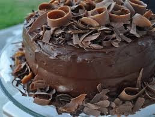
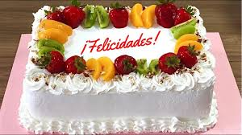
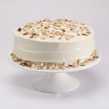
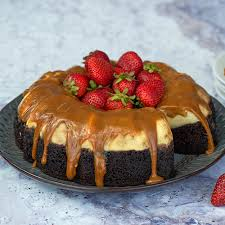
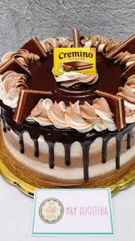

¡Endulza tu día con nuestras delicias artesanales!
| Nombre del pastel | Descripcion del pastel | Imagen |
| chocolate | El pastel de chocolate es un postre clásico y universalmente apreciado, elaborado principalmente con harina, huevos, azúcar, mantequilla, cacao en polvo y chocolate fundido. Su textura es esponjosa y húmeda, y su sabor es rico e intenso, ideal para los amantes del cacao. |  |
| Tres leches | Pastel de tres leches: Bizcocho esponjoso empapado en una mezcla de leche condensada, leche evaporada y leche entera. Se cubre con crema batida o merengue y suele decorarse con frutas. Suave, húmedo y perfecto para celebraciones. |  |
| Vainilla | Pastel de vainilla: Postre clásico, suave y esponjoso, con sabor cálido y delicado. Ideal para celebraciones por su versatilidad y facilidad para combinar con rellenos o coberturas. |  |
| Chocoflan | Chocoflan: Postre mexicano que combina flan de vainilla y pastel de chocolate, cubierto con caramelo. Se hornea en baño María y es famoso por su efecto de capas invertidas |  |
| Cremino | Pastel de cremino: Postre de capas suaves de chocolate y crema de avellanas, inspirado en el bombón italiano de tres chocolates. |  |